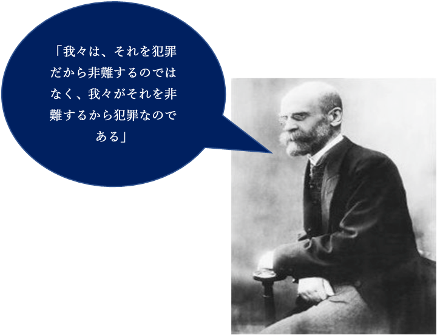

犯罪とは
エミール・デュルケムのお話
犯罪がない世界を想像してみてください。それはどんな世界でしょうか。犯罪がないってことはそれを取り締まるルール・法律がないってことでもあるんですよね。そんな世界、果たして存在するのでしょうか。
結論を言うと、存在しません。それを説明したのがデュルケムです。
逸脱
デュルケム曰はく、社会にはいつもルールが存在していて、ルールのない世界はありえない、と。聖人君子だけの世界を想像してみてください。例えば、全員がブッダやイエスキリストみたいな人物の世界です。そこでは現代における「犯罪」は起こりえません。でも、普通は見過ごされるような行為（挨拶をしないetc）が、全員が成人君子であるがゆえに犯罪となるのです。
このメカニズムを逸脱といいます。その行為が正しくないからディスるんじゃなくて、マジョリティ（大人数）がディスりたいから正しくないとみなすっていう、人間の汚い面が現れてしまうメカニズムなんですよね。